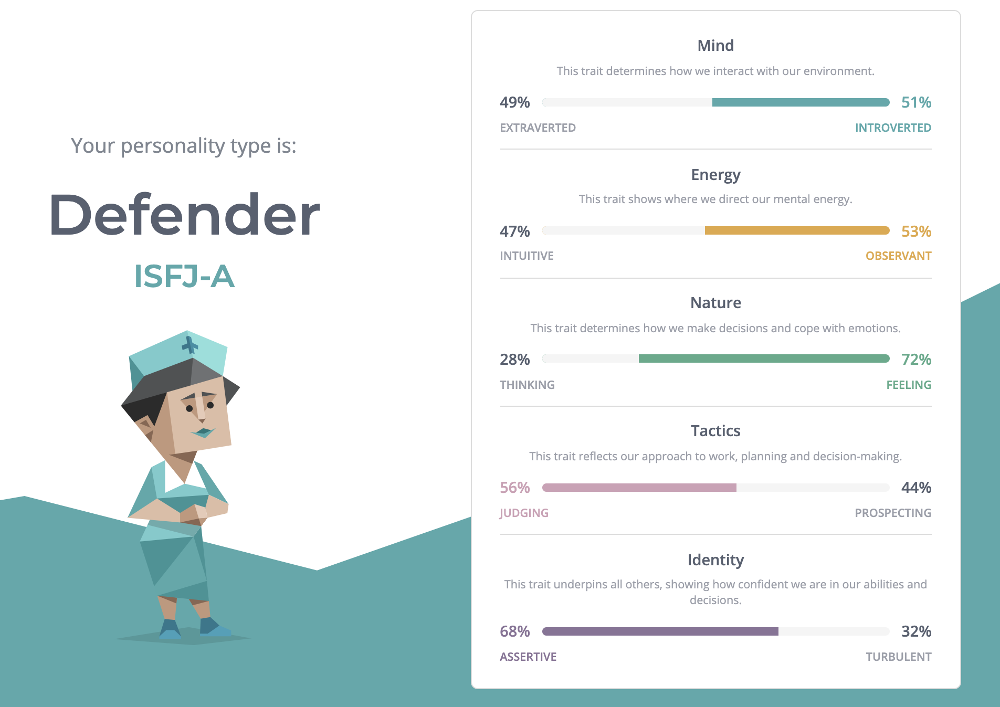
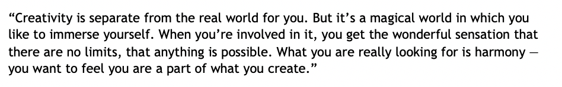

Upon taking part in each of these personality tests, I now have a greater awareness of insight into myself. I have never completed one of these tests before and I felt that I resonated strongly with the findings. Particularly some of the strengths and weaknesses from the Myers-Brigg:
• Loyal and hardworking
• Good practical skill
• Supportive
• Reliable and patient
As an individual who has shown qualities that can be equally introverted as extroverted, some could be my patience when listening to concerns and ideas of fellow team members, whilst also confidently being able to come forward and suggest ideas that could solve a problem. Being a visual learner shows that I obtain information best whilst observing what my team members or managers are demonstrating. The creative style results would attribute towards collaborating on projects, as I enjoy being responsible for working towards something that makes a more significant impact on an audience. I put much effort in towards making my material the best it can be so that I’m not wondering ‘what if I did this?’ after completing the work. When forming a team, I find it very important to seek people who share similar values, have excellent communication skills, an open mind, and are happy to compromise or adapt to changes for the benefits of the group in further development.